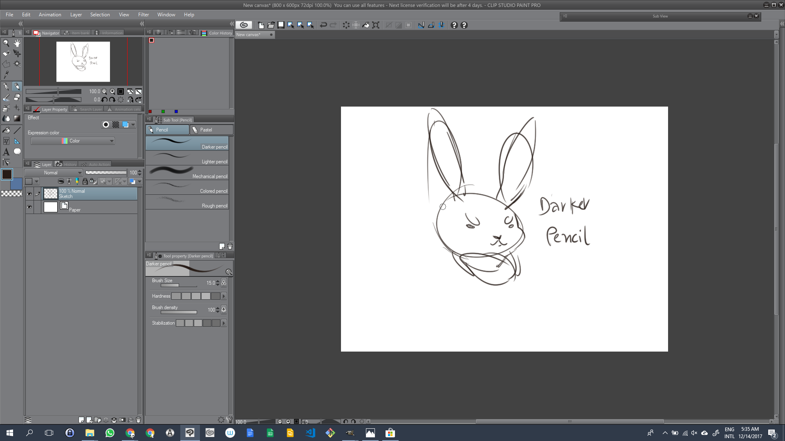
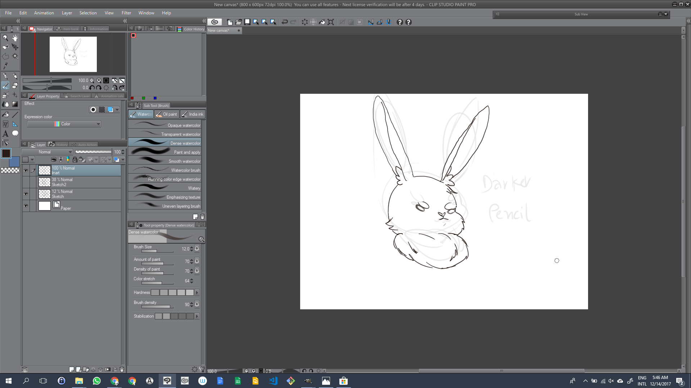
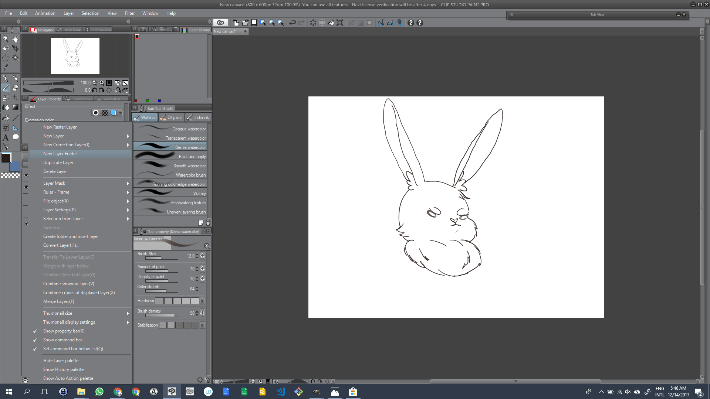
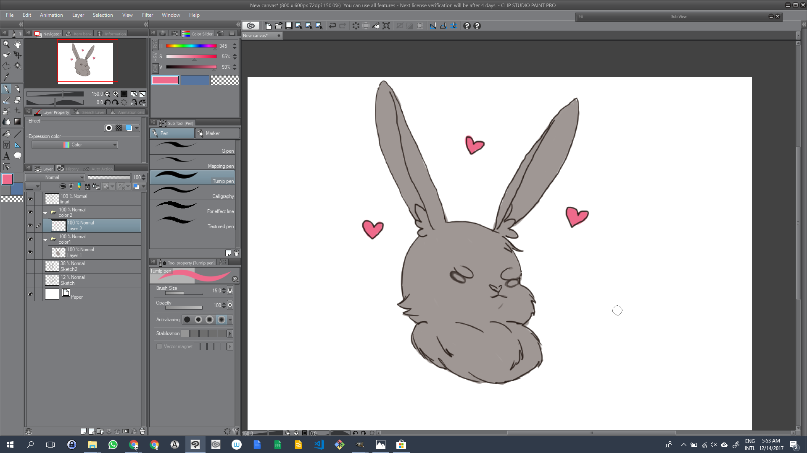
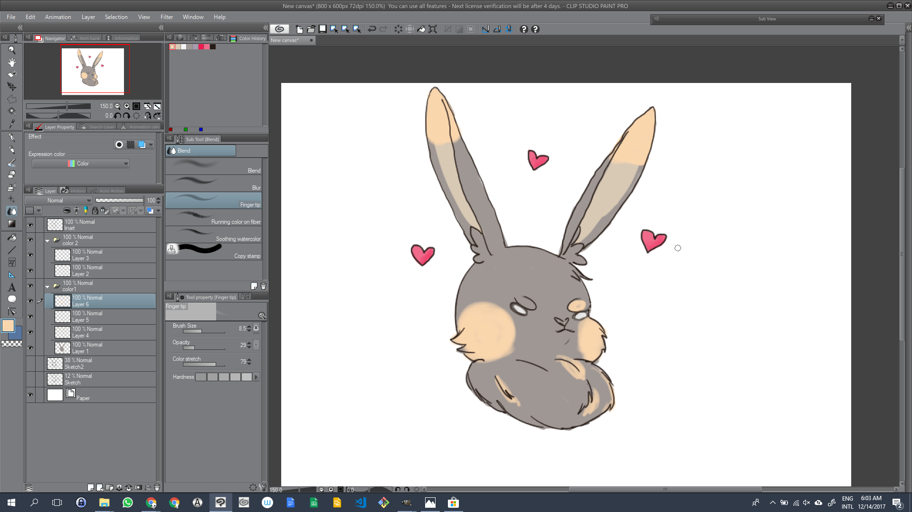
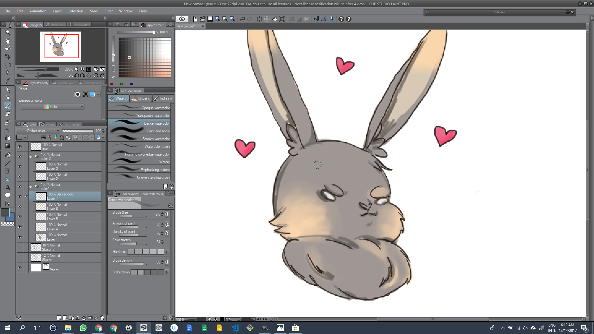
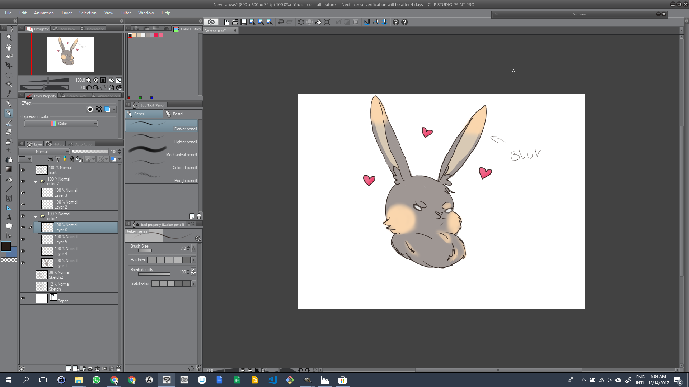
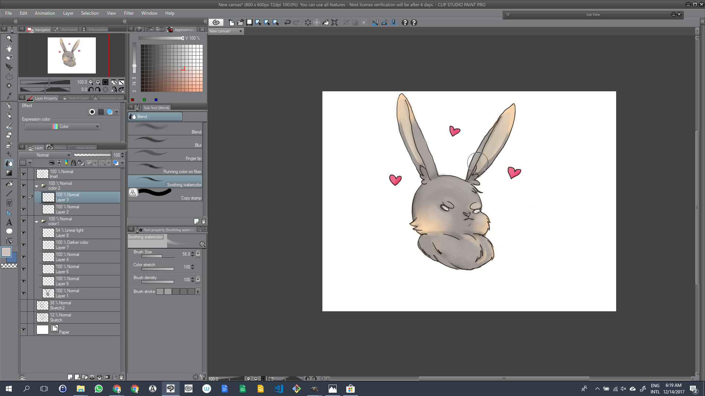
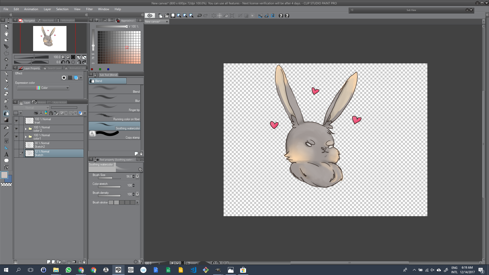
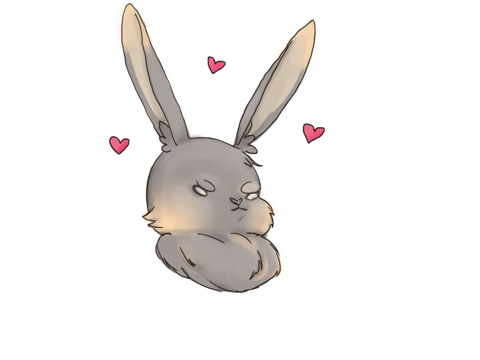

So it's your first time drawing with digital drawing, right? Well, welcome to this world of not slept
nights(this is not a joke...). Digital drawing is basically using a lot of layers to divide your
drawing to have a better control of it, and just a hit, do not paint at the same layer you will do
the lineart.

- Make a sketch to have an idea of what you will draw at the first layer, name it(Ex, Sketch or 1 layer);

- Make a second layer, and low fist lawyer’s opacity. Make a definitive sketch(also low this layer’s
opacity after drawing);

- Make the Linenart. Recommended Tumip pen or Dense water color. Crean lines, don’t will areas, after
draw the Lineart layer can you hide 1 and 2 Layer.

- Put the color base(at a new layer that need be behind the lineart layer). Do one color base layer
to each part of the drawing And create a folder to each color base layer.

- Inside the color folder create more layers to give texture to the color as you wish. Recommended
use Blush and air blush tools to do it.

- Over the color base create layers with the color details.Use Blush tools to do it.

- use The blend tool to mix the colors and make look like they are at the same layer.
- Running color on fiber=mix and apply texture on the layer color.
- Finger tip=edirect parts of the layer, like finger finger painting.
- Blend=to erase the color.

- Create 2 new layer to be at top of the color, it’s recommended change the type of layer; to do it
you look at your layers area, at the top will have the opcion normal, click on it and change
the first one to linear light( to bright light) and the second one as darker color(to do the
shadows.

- After have an satisfactory result, combine the layers and save as JPG or PNG.

- Tahdan!